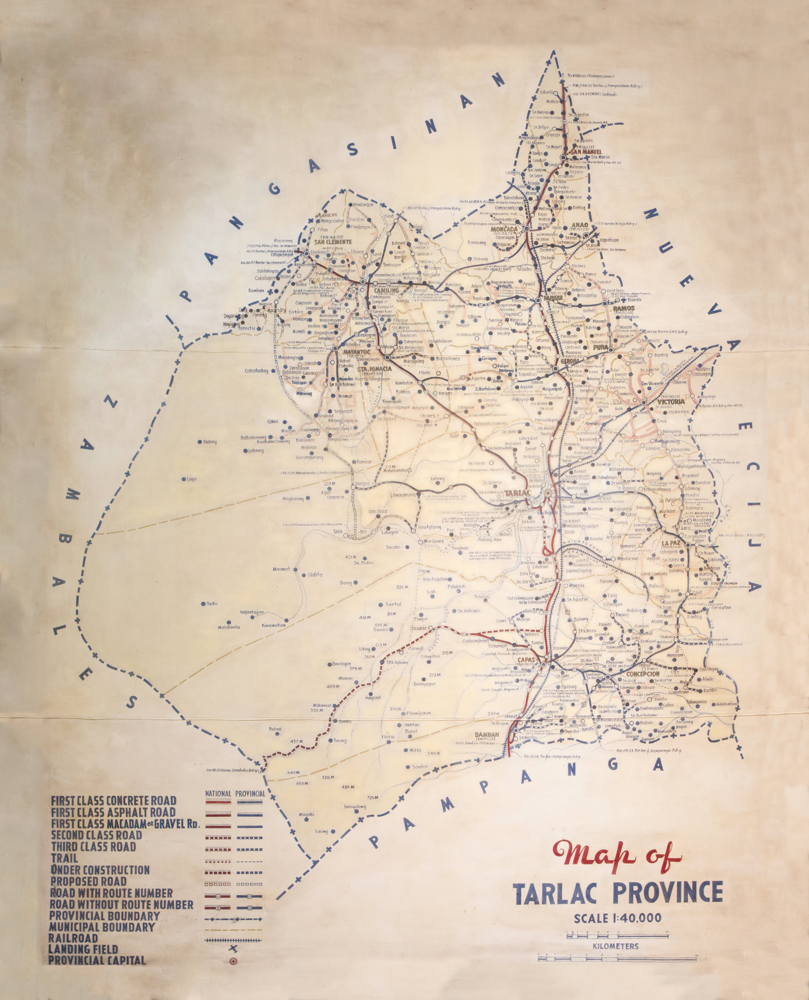

Diwa ng Tarlac
From the province's top destinations to sites off the beaten path — unlock every corner of Tarlac.
From the province's top destinations to sites off the beaten path — unlock every corner of Tarlac.

Province Overview
From a hand-drawn 1:40,000 provincial survey to a modern municipal breakdown — three ways to see how Tarlac's 1 city and 17 towns fit together.
SCROLL / EXPLORE03 — Explore Live
Filter by category, tap any pin to see what it is and its exact coordinates — the same data model can plug straight into accommodation, heritage, or eco-tourism listings.
04 — The Province At A Glance
Heritage Cultures
0
Kapampangan, Ilocano, Tagalog, Pangasinense, Fil-Chinese, Muslim & Aeta communities
Barangays
0
Across 1 city and 17 municipalities
Province Area
0
Square kilometers of plains, rivers & volcanic highlands
Highest Elevation
0
Mount Iba, on the province's western range
02 — Municipalities At A Glance
Tarlac City
Capital
Anao
Bamban
Camiling
Capas
Concepcion
Gerona
La Paz
Mayantoc
Moncada
Paniqui
Pura
Ramos
San Clemente
San Jose
San Manuel
Santa Ignacia
Victoria